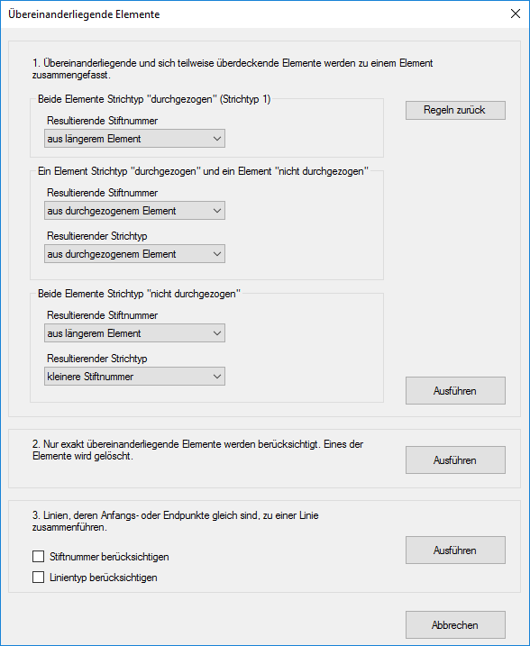
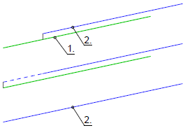
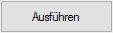
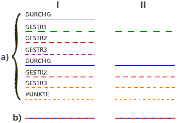
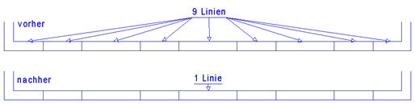

")
")
Optionen zur Umwandlung übereinanderliegender oder zusammenhängender Zeichenelemente (Linien, (Teil-)Kreise und Texte). Öffnet den Dialog Übereinanderliegende Elemente.
Durch das Einlesen von DWG/DXF-Dateien können sich Linien und Kreise ganz oder teilweise überlagern. Das Fangen von Elementen ist dann nicht eindeutig. Im Dialog können Sie die Stiftnummer (resultierende Stiftnummer) des Elements angeben, in der die zusammenzufassenden Elemente gezeichnet werden sollen. Ebenfalls können Sie den Strichtyp (resultierender Strichtyp) angeben, mit dem die Elemente neu gezeichnet werden sollen.
Bemaßungen, Bewehrungselemente, Schraffuren und Füllungen sind von dieser Aktion nicht betroffen.
1.Elemente auswählen
§Führen Sie einen der folgenden Schritte aus:
a)Einzelne Elemente: Ziehen Sie einen Rahmen durch das Anklicken von zwei Punkten um die zu ändernden Elemente oder klicken Sie einzelne Elemente an. [1.Punkt/Element]; [2.Punkt].
-Solange im Funktionsbereich der Modus Hinzuf aktiviert ist, können Sie der Auswahl weitere Elemente hinzufügen.
-Wählen Sie den Modus Entfer, um einzelne oder mehrere Elemente aus der Auswahl zu entfernen. Bei gedrückter Umschalttaste (Shift) wird automatisch der Entfer-Modus aktiviert - am Cursor wird ein Minuszeichen eingeblendet.
Bestätigen Sie die Auswahl mit Rechtsklick. Der Dialog Übereinanderliegende Elemente wird geöffnet.
b)Alle Elemente: Wählen Sie alle änderbaren Elemente auf der gesamten Zeichenfläche aus, indem Sie unter der Abfrage auf klicken.
Die Elemente werden markiert und der Dialog Übereinanderliegende Elemente wird geöffnet.
2.Aktionen auswählen
§Wählen Sie im Dialog die gewünschte Vorgehensweise und die dazu benötigten Angaben.
§Um die Aktion zu starten, klicken Sie auf Ausführen.
-Der Dialog wird geschlossen und die Aktion ist beendet. Prüfen Sie das Ergebnis gegebenenfalls über die Elementabfrage. [Untere Menüleiste | ?].
-Ungewollte Änderungen können Sie mit der Korrekturfunktion in der unteren Menüleiste rückgängig machen.
|
Tipp: |
|
Mit der Funktion [Konst1 | FenÄnd | Attrib] können Sie die Attribute der zusammengefassten Zeichenelemente ändern. |

Optionen im Dialog "Übereinanderliegende Elemente"
 |
1. Übereinanderliegende und sich teilweise überdeckende Elemente werden zu einem Element zusammengefasst.
Sucht nach Elementen, die ein anderes (im Folgenden zu wählendes) ganz oder teilweise überdecken. Wird ein Element gefunden, wird dieses verlängert oder verkürzt und entsprechend den gewählten Einstellungen geändert. Danach wird das erste Element gelöscht. Dieser Vorgang wird so lange wiederholt, bis alle Elemente durchlaufen sind.
In Ausnahmefällen kann es dazu kommen, dass bei weiteren Durchläufen weitere Elemente gefunden werden.
Beispiel:
 |
Linie 1 = Stiftnummer: 2 (grün); Strichtyp: 1 Linie 2 = Stiftnummer: 1 (blau); Strichtyp: 1 Beide Elemente haben den gleichen Strichtyp (DURCHG), daher gilt die erste Option "Beide Elemente Strichtyp durchgezogen". Unter "Resultierende Stiftnummer" wird der Eintrag "kleinere Stiftnummer" gewählt. Nach dem Ausführen wird zur Linie 1 die Linie 2 gefunden und mit dieser zusammengefasst. Die resultierende Linie ist die zweite Linie. |
Folgende Fälle werden berücksichtigt, wenn zwei Linien/Kreise miteinander verglichen werden:
·Beide Elemente sind vom Strichtyp 1 (DURCHG)
·Ein Element ist vom Strichtyp 1 (DURCHG), das andere nicht
·Beide Elemente sind nicht vom Strichtyp 1 (DURCHG)
Für jeden der Fälle gibt es folgende Möglichkeiten für die Auswahl der resultierenden Stiftnummer und des resultierenden Strichtyps:
·aus längerem Element
·aus kürzerem Element
·aus erstem Element
·aus zweitem Element
·kleinere Stiftnummer
·größere Stiftnummer
·aus durchgezogenem Element
·aus gestricheltem Element
Setzt alle Optionen auf die Standardeinstellung zurück.

Führt die Aktion mit den gewählten Einstellungen aus.
2. Nur exakt übereinanderliegende Elemente werden berücksichtigt.
Bis auf die zuletzt gezeichnete bzw. "oben liegende" Linie, werden alle Linien, deren Anfangs- und Endpunkte und deren Linientyp exakt gleich sind, gelöscht. Die Stiftnummer wird nicht berücksichtigt.
 |
In der linken Zeichnung (I) sehen Sie die Linien (DURCHG bis PUNKTE) auseinandergezogen dargestellt (a). Darunter sehen Sie die tatsächliche Abbildung bzw. Darstellung der übereinanderliegenden Linien (b). Die zuletzt gezeichnete Linie (DURCHG) liegt oben. In der rechten Zeichnung (II) sind nur noch die Linien zu sehen, die nach dem Ausführen der Aktion erhalten bleiben. Die erste Linie (DURCHG) wird gelöscht, wenn noch eine weitere Linie mit gleichem Linientyp gefunden wird. So werden die Linien nacheinander untersucht. Nach der Durchführung kann es sinnvoll sein, mit der Funktion [Attrib] die Elemente nachzubearbeiten.
|
Führt die Aktion aus.
3. Linien, deren Anfangs- oder Endpunkte gleich sind, zu einer Linie zusammenführen.
Miteinander verbundene Linienelemente, die in einer Flucht liegen, werden zu einer Linie zusammengefasst.
Stiftnummer berücksichtigen
Fasst die gewählten Linienelemente nur zusammen, wenn sie dasselbe Stiftattribut haben.
Linientyp berücksichtigen
Fasst die gewählten Linienelemente nur zusammen, wenn sie denselben Linientyp haben.
Führt die Aktion mit den gewählten Einstellungen aus.
Beispiel:  |
Setzt die Einstellungen auf die Standardwerte zurück und schließt den Dialog.
Zugehörige Referenzen: